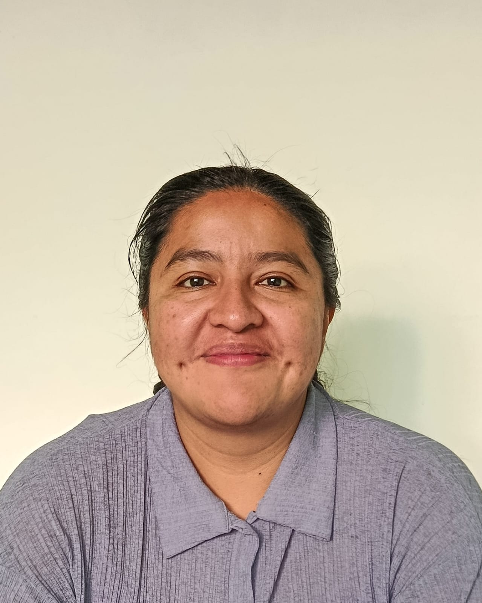

¡Hola! Mi nombre es Lizeth Dorantes:
Desarrolladora Full Stack (Java)
Con experiencia en datos ambientales e IoT.
Desarrollo aplicaciones web claras, útiles y fáciles de usar.
Proyectos destacados

Individual
Neme
Landing page responsiva para una tienda de ropa deportiva, hecha en una semana.

Acerca de mí
Soy Zeth, desarrolladora Java Full Stack Jr. Me gusta resolver problemas con tecnología. Tengo 4 años de experiencia coordinando proyectos en IoT ambiental, y vengo de la ciencia, así que me gusta entender cómo funcionan las cosas.
Esto es lo que aporto:
- Desarrollo Full Stack: Java, JavaScript, SQL y Git, con gusto por que lo que construyo se vea bien y se entienda fácil.
- Datos en tiempo real: diseñé dashboards de monitoreo ambiental con ThingsBoard, convirtiendo datos complejos en algo que cualquiera pueda leer y usar.
- Coordinación de proyectos: 4 años en una startup de IoT/agrotech, con foco en documentación, trazabilidad y comunicación entre equipos.
- Mentalidad científica: formulo preguntas, reviso evidencia y me apoyo en datos para decidir.
Fuera del código, me gusta tejer, nadar y andar en bici.
Busco mi primer rol como developer Jr. donde aportar mi experiencia y seguir creciendo.
